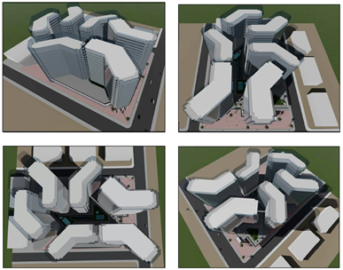

Residential Development Feasibility Study

Project Objective
Assess the technical, financial, operational, and market feasibility of a residential real estate development composed of apartment buildings in Karbala. The study aimed to determine whether the project could be developed as a viable investment opportunity, under realistic construction, sales, regulatory, and infrastructure assumptions, while providing the client with a structured decision-making framework before commitment to design development and execution.
Feasibility Scope and Decision Framework
Scope of Study: Site potential review, development assumptions, market positioning, demand logic, preliminary cost structure, revenue scenarios, delivery constraints, and investment viability.
Decision Focus: Go / No-Go / Reframe recommendation based on risk, market absorption, and capital requirements.
Primary Outputs: Feasibility assessment, scenario analysis, development logic, stakeholder considerations, and project recommendations.
Development Timeline
Key Outcomes and Project Wins
- Investment Clarity: Transformed a broad real estate ambition into a structured feasibility decision model with clear development assumptions and economic logic.
- Scenario-Based Analysis: Tested multiple viability scenarios to support more resilient planning under uncertainty, especially regarding construction costs and sales pace.
- Client Decision Support: Provided a practical basis for deciding whether to proceed, adjust project scale, refine the product mix, or postpone investment until critical conditions improved.
- Stakeholder Alignment: Clarified the key governance, approval, and coordination needs required before moving into concept design or execution planning.
Lessons Learned
- Early Assumption Testing Matters: In feasibility-stage real estate projects, the quality of the decision depends less on precision and more on the discipline used to test assumptions early, especially for demand, cost inflation, and infrastructure readiness.
- Scenario Planning Improves Credibility: Presenting a base case together with downside and upside scenarios made the recommendation more robust and more useful to the client than a single-point financial estimate.
- Stakeholder Mapping Should Start Early: Regulatory interfaces, local authorities, infrastructure actors, and investment decision-makers all affect feasibility. Mapping them early reduces blind spots before detailed planning begins.